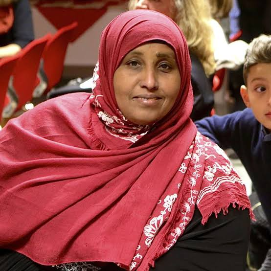

Community Engagement & Outreach
Unterstützung bei der Konzeption von Begegnungsformaten, Community-Aktivitäten und niedrigschwelligen Angeboten für Frauen und migrantische Communities.
Über Hawo
Building Communities. Empowering Women. Making Voices Heard.
Hawo Abdulle wurde 1968 in Qalafe, Somalia, geboren. 1989 kam sie nach Deutschland – ein Land, das zu ihrer Heimat wurde. Heute ist sie verheiratet, Mutter von neun Kindern, die alle in Deutschland geboren und aufgewachsen sind, und blickt auf fast vier Jahrzehnte zurück, in denen sie Familie, gesellschaftliches Engagement und die Arbeit mit Menschen miteinander verbunden hat.

Sie hat Vereine mit aufgebaut, Begegnungsräume geschaffen, Frauen beraten und an einem international ausgezeichneten Film mitgewirkt. Ihre Arbeit bewegt sich dort, wo Menschen auf gesellschaftliche, sprachliche oder institutionelle Barrieren stoßen – und wo persönliche Erfahrung, Vertrauen und praktische Unterstützung einen Unterschied machen können.
Heute bringt sie diese Erfahrung in die Zusammenarbeit mit Frauen, sozialen Organisationen, Bildungseinrichtungen und Projekten ein, die Menschen erreichen, unterstützen und gesellschaftliche Veränderungen anstoßen möchten.
2005 war Hawo am Aufbau eines Vereins in Darmstadt beteiligt, dessen ursprüngliche Arbeit Bildungs-, Integrations- und Beratungsangebote für die somalische Community sowie humanitäre Projekte mit Bezug zu Somalia umfasste.
2008/2009 gehörte sie zu den Gründerinnen des Internationalen Frauencafés Groß-Gerau und Umgebung e. V. Von 2009 bis 2021 war sie dessen Vorsitzende. Über zwölf Jahre hinweg gestaltete sie einen Raum, in dem Frauen unterschiedlicher Herkunft zusammenkommen, sich austauschen und gegenseitig unterstützen konnten.
Sie organisierte gemeinsame Frühstücke, Veranstaltungen und Aktivitäten. Gesprochen wurde über das, was Frauen und Familien im Alltag beschäftigte: Bildung, Gesundheit, Kinder, Behörden und das Leben in Deutschland.
2016 erhielt Hawo für ihr gesellschaftliches Engagement den Deutschen Bürgerpreis in der Kategorie „Alltagshelden“ im Kreis Groß-Gerau. Auch während der COVID-19-Pandemie setzte sie ihre Arbeit fort und organisierte ein Bewegungsangebot im Anne-Frank-Jugendhaus.
Hawo kennt den Aufbau und die langjährige Begleitung von Gemeinschaftsangeboten aus eigener Praxis. Sie weiß, wie wichtig Vertrauen, kontinuierliche Beziehungen und niedrigschwellige Zugänge sind.
Diese Erfahrung ist besonders relevant für Organisationen, die Frauen und migrantische Communities erreichen, Begegnungsformate entwickeln oder Beteiligung nicht nur planen, sondern tatsächlich ermöglichen möchten.
Heute arbeitet Hawo bei FIM – Frauenrecht ist Menschenrecht e. V. in Frankfurt am Main. Ihr Schwerpunkt liegt auf der Beratung von Frauen im Kontext weiblicher Genitalverstümmelung beziehungsweise -beschneidung (FGM/C), insbesondere mit Bezug zu Somalia.
In ihrer Arbeit treffen persönliche Erfahrungen auf Fragen der Gesundheit, gesellschaftliche Tabus, Sprachbarrieren und institutionelle Strukturen. Hawo unterstützt Frauen dabei, Informationen zu verstehen, Beratungs- und Versorgungsangebote kennenzulernen und sich in komplexen Situationen zu orientieren.
Ihre Erfahrung ist besonders wertvoll für Projekte, die sensible Gesundheitsthemen verständlich vermitteln, sprachliche und kulturelle Zugangsbarrieren berücksichtigen oder betroffene Frauen aktiv in die Entwicklung von Unterstützungsangeboten einbeziehen möchten.
Sie verbindet Community-Erfahrung mit praktischer Beratungsarbeit und einem Verständnis dafür, dass gute Angebote nur dann wirken können, wenn sie die Menschen erreichen, für die sie gedacht sind.
Manche Erfahrungen werden gesellschaftlich kaum sichtbar. Mit HALIMA – Eine Anleitung zum Starksein war Hawo an einem Filmprojekt beteiligt, das die Perspektiven von Frauen mit Erfahrungen weiblicher Genitalverstümmelung in den Mittelpunkt stellt.
Der Film begleitet eine Frau nach einer rekonstruktiven Operation. Ihre Heimreise wird zu einer Erzählung über Krieg, Flucht, Migration, körperliche Integrität und Selbstbestimmung. Die Hauptfigur basiert auf den Erfahrungen mehrerer Frauen. Der Film entstand in gemeinschaftlicher Zusammenarbeit.
Hawo wirkte am Drehbuch mit, unterstützte die Filmproduktion als Übersetzerin am Set und gehörte zum Filmkollektiv. HALIMA wurde auf internationalen Filmfestivals gezeigt und mehrfach ausgezeichnet, unter anderem durch die Deutsche Gesellschaft der Plastischen, Rekonstruktiven und Ästhetischen Chirurgen sowie beim SHORTS Film Festival Offenburg.
Das Projekt zeigt ihre Erfahrung darin, sensible gesellschaftliche Themen gemeinsam mit Betroffenen in eine öffentliche Erzählung zu übersetzen.
Für Film-, Bildungs- und Aufklärungsprojekte kann sie Perspektiven aus der Community-Arbeit, sprachliche Vermittlung und Erfahrung aus einer partizipativen Filmproduktion einbringen.
Hawo Abdulles Lebensweg verbindet mehrere Rollen: Mutter, Vereinsgründerin, langjährige Vorsitzende, Frauenrechtsberaterin und Mitwirkende an einem internationalen Filmprojekt.
Was ihre Arbeit auszeichnet, ist nicht eine einzelne Auszeichnung oder Position, sondern die Kontinuität ihres Engagements. Sie hat über Jahrzehnte hinweg mit Menschen gearbeitet, Beziehungen aufgebaut, Begegnungen organisiert und sich mit Fragen beschäftigt, für die es selten einfache Lösungen gibt.
Daraus ist eine Erfahrung entstanden, die sie heute in unterschiedliche Formen der Zusammenarbeit einbringen kann.
Work with Hawo
Ob Community-Projekt, Bildungsinitiative, Frauenrechtsarbeit oder Filmproduktion: Hawo bringt langjährige praktische Erfahrung in die Zusammenarbeit mit Menschen und Organisationen ein.
Unterstützung bei der Konzeption von Begegnungsformaten, Community-Aktivitäten und niedrigschwelligen Angeboten für Frauen und migrantische Communities.
Mitwirkung an Informations-, Sensibilisierungs- und Aufklärungsprojekten zu FGM/C, Frauengesundheit und Selbstbestimmung – im Rahmen ihrer fachlichen Erfahrung.
Unterstützung bei sprachlicher und kultureller Vermittlung, insbesondere im somalischsprachigen Kontext.
Mitwirkung an Projekten, die persönliche Erfahrungen, gesellschaftliche Themen und die Perspektiven betroffener Menschen durch Film oder andere Erzählformate sichtbar machen.
Zusammenarbeit
Für Projektanfragen, Kooperationen, Veranstaltungen und gemeinsame Initiativen.
Zusammenarbeit anfragen